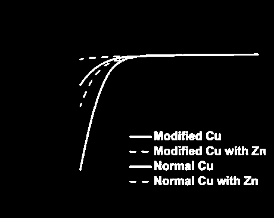
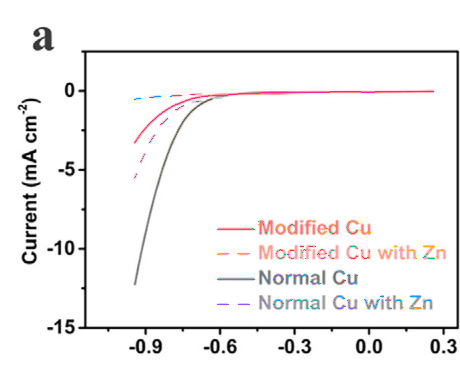
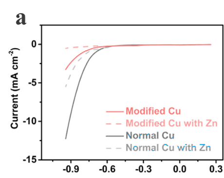
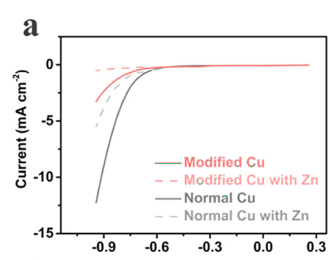
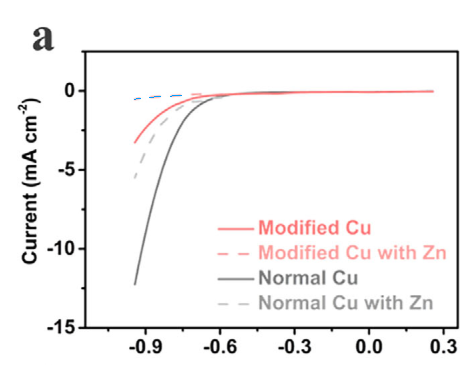

Candidate paths only, not accepted scientific measurements. Every point is a source pixel; no gap interpolation or smoothing.
Review candidates: 2





| ID | Status | Style | Points | Segments | X coverage |
|---|---|---|---|---|---|
| TR01 | CANDIDATE_REVIEW | SOLID_WITH_OCCLUSION_CANDIDATE | 297 | 3 | 0.8065 |
| TR02 | UNRESOLVED_FRAGMENT_PATH | DISCONTINUOUS_UNRESOLVED | 141 | 26 | 0.578 |
| TR03 | UNRESOLVED_FRAGMENT_PATH | DISCONTINUOUS_UNRESOLVED | 140 | 24 | 0.6102 |
| TR04 | UNRESOLVED_FRAGMENT_PATH | DISCONTINUOUS_UNRESOLVED | 83 | 17 | 0.379 |
| TR05 | UNRESOLVED_FRAGMENT_PATH | DISCONTINUOUS_UNRESOLVED | 76 | 17 | 0.3763 |
| TR06 | UNRESOLVED_FRAGMENT_PATH | DISCONTINUOUS_UNRESOLVED | 57 | 14 | 0.2446 |
| TR07 | UNRESOLVED_FRAGMENT_PATH | DISCONTINUOUS_UNRESOLVED | 56 | 10 | 0.2177 |
| TR08 | REJECTED_WEAK_PATH | SOLID_WITH_OCCLUSION_CANDIDATE | 52 | 3 | 0.1452 |
| TR09 | UNRESOLVED_FRAGMENT_PATH | DISCONTINUOUS_UNRESOLVED | 38 | 8 | 0.1747 |
| TR10 | CANDIDATE_REVIEW | DASHED_CANDIDATE | 31 | 3 | 0.129 |
| TR11 | REJECTED_WEAK_PATH | SOLID_CANDIDATE | 13 | 1 | 0.0349 |
| TR12 | REJECTED_WEAK_PATH | SOLID_CANDIDATE | 12 | 1 | 0.0323 |